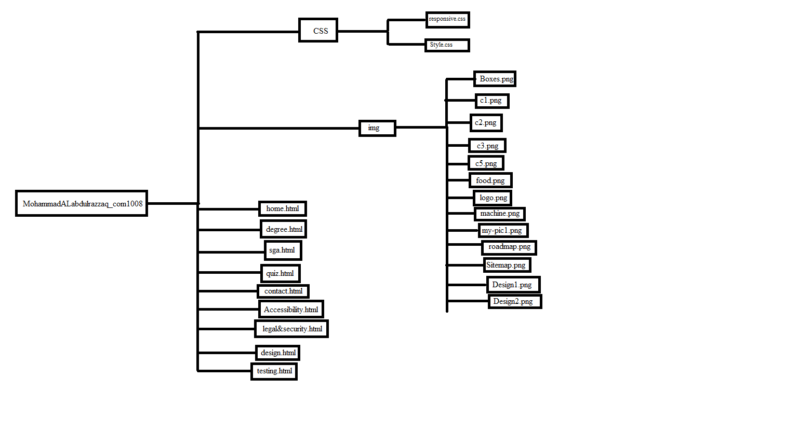
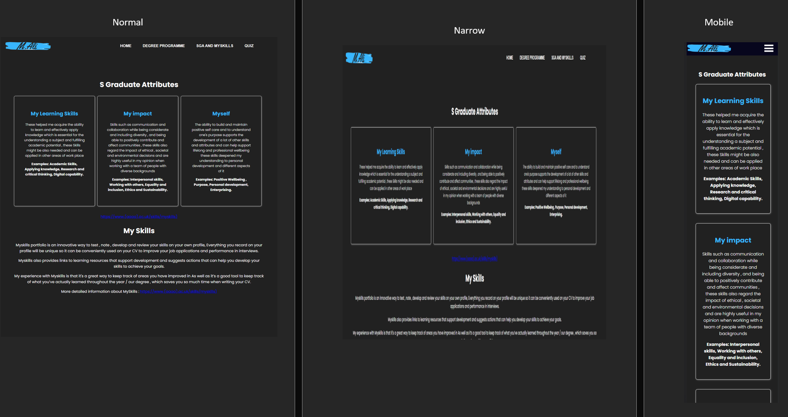
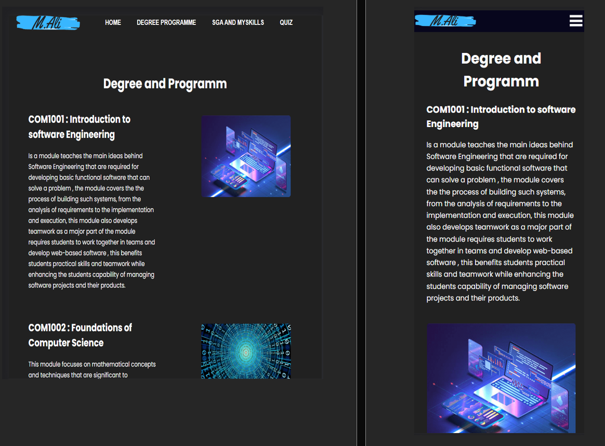

Design
Introduction
- This website was designed to be a creative , simple yet interactive design that can showcase my HTML and CSS & design my design was is influenced by my favorite color as well as the dark mode feature , that's why I chose to have a dark coloured background as it is easy on the eyes but still allows the content to be bold and clear.

Menu System:
- As for my navigation bar I decided to use a hybrid of the plain , hidden and do nothing approach when designing as I felt they would be the easiest to implement while still looking clean and professional , it is also the design I felt would be most scalable , something I kept in consideration when making the menu systems design was to make sure I am efficient with my space and not make the pages over cluttered while still making the page engaging while maximizing its functionality , more about the designs that influenced me :
- https://cmd-t.webydo.com/from-simple-to-unusual-a-look-at-navigation-in-web-design-1057d0baef7b
- 
Create Mobile Responsive Website
- The idea of creating a mobile-first responsive web design is to make sure your design fits and looks good on all devices , which more often than not means making a design that will automatically adjust its size according to the its being used on a variety of screen sizes or viewports , this is acheived by setting the css width property to 100% , this makes images scale up and down to perfectly fit the page on every device its being used on .
- 